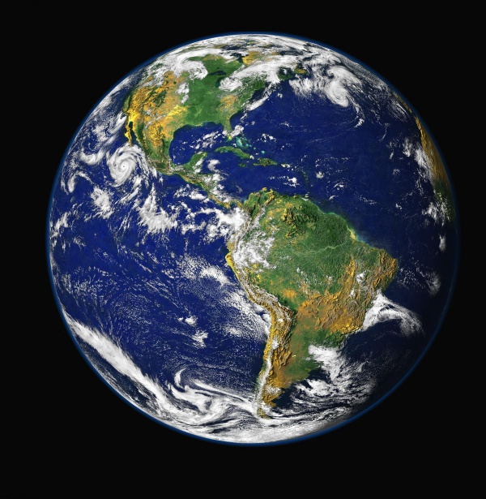

Tierra
|  |
|
Los antiguos griegos denominaron a la Tierra en honor a la diosa Gea, la cual era adorada como la creadora del universo y la madre, tanto de los dioses primordiales, los titanes, como de los primeros humanos. La Tierra, es el quinto planeta más grande y el tercero en cercanía al Sol del sistema solar. En la Tierra se suceden una gran cantidad de características que hacen posible la vida. Por ejemplo, la atmósfera de la Tierra, la cual también nos protege de la radiación procedente del Sol y del espacio, está compuesta por un 78 % de nitrógeno, un 21 % de oxígeno y un 1 % de otros ingredientes: el equilibrio perfecto para respirar y vivir. Los vastos océanos de la Tierra proporcionaron un lugar conveniente para que comenzara la vida hace unos 3.800 millones de años. La Tierra es del mismo modo el único planeta del sistema solar con una sola luna, la cual es, en muchos sentidos, responsable de hacer de la Tierra un hogar habitable |

|